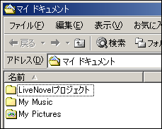
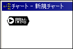

チュートリアル

まず、プロジェクト用に空のフォルダを用意してください。この例では、「マイ ドキュメント」の中に「LiveNovelプロジェクト」というフォルダを作成します。
LiveNovelを起動し、「ファイル」メニューの「プロジェクトの新規作成」を選択します。
「フォルダの参照」が表示されたら、上記で作成したプロジェクト用フォルダを選択し、OKをクリックします。
「雛形の選択」が表示されたら、使用する雛形を選択し、OKをクリックします。

チャートウィンドウに「新規チャート」タブが表示され、チャートの中に「開始」が１つだけある状態になっていれば成功です。
次にプロジェクトオプションを設定します。とりあえず作業ができるように最低限の設定だけしておきます。
では、「プロジェクト」メニューの「オプション」を選択し、オプションダイアログを出してください。
「タイトル」はゲームウィンドウのタイトルバーに表示されます。仮でもいいので一応入力しておきましょう。ここでは「ＧＴＥ・ＳＰ」とします。
「識別コード」は重要です。これが正しくないと画像が表示されません。このコードにはGraphicsGaleの環境設定で設定したコードと同じものを入力してください。※LiveMakerProのみ
他の項目は後でもいいので、OKをクリックしてダイアログを閉じてください。